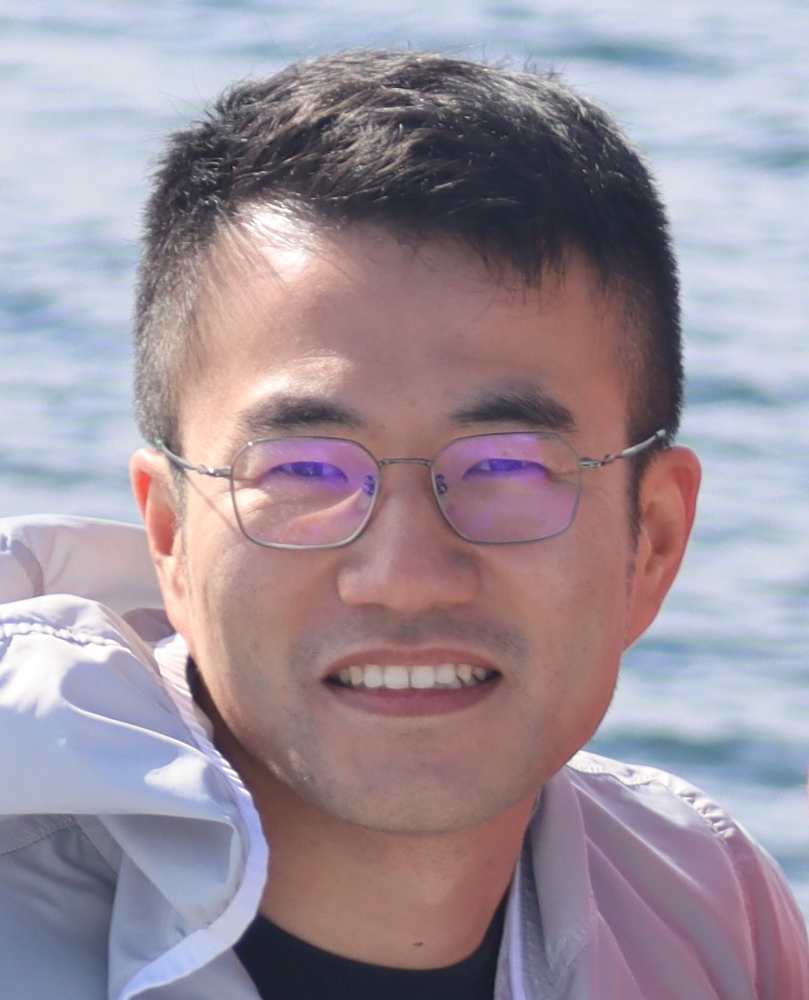

{% endif %}
{% endif %}
{{paper.authors}}
{{paper.journal}}
{% if paper.code %} [Code]
{% endif %}
|  |
Zhen ZhouResearch FellowLaboratories for Computational Neuroimaging (LCN) MGH, Harvard Medical School [zzhou22@mgh.harvard.edu] [cv] |
Currently, I am a Research Fellow at the Athinoula A. Martinos Center for Biomedical Imaging, where I develop cutting-edge harmonization methods for brain connectivity under the supervision of Dr. Iman Aganj and co-mentorship of Dr. Bruce Fischl.
My research focuses on addressing critical challenges in multi-site neuroimaging studies through innovative computational approaches. Previously, as a postdoctoral researcher at the Center for Biomedical Image Computing and Analytics in the University of Pennsylvania, I led research on brain aging through multiscale functional connectivity analysis. During my Ph.D., I had the chance to work with leading researchers at UNC-Chapel Hill to develop the BrainNetClass toolbox and pioneered the first infant-dedicated resting-state fMRI analysis pipeline for the Baby Connectome Project.
A selection of papers that represent my research interests (* represents co-first authors).
|
{% if paper.image %}
{% endif %}
|
{{paper.title}}
{{paper.authors}} {{paper.journal}} {% if paper.code %} [Code] {% endif %} |